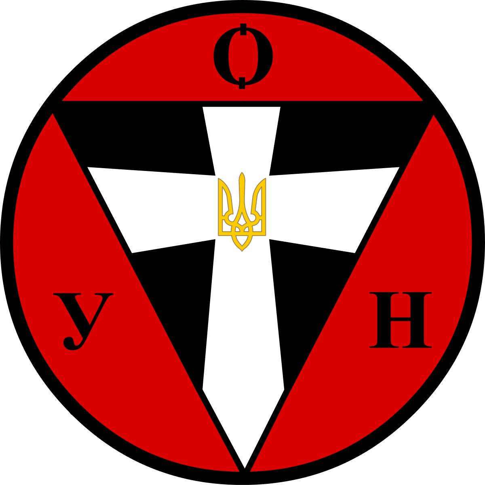
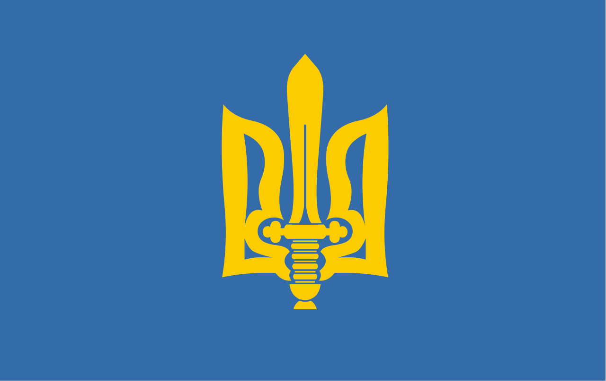

Символіка ОУН
До символів ОУН належать емблема, прапор, тризуб і гімн. Символіка ОУН зареєстрована Міністерством юстиції України, свідоцтво № 41 від 9 лютого 1994 року.

Емблема
Чорний колір символізує українську землю, а червоний — кров, пролиту за Україну.

Прапор
Синє прямокутне полотнище з емблемою ОУН. Використовувався з 1930-х рр. У 1993р. зареєстрований Міністерством юстиції України.

Тризуб
Щит синього кольору із стилізованим золотим тризубом з мечем, затверджений Проводом Українських Націоналістів у 1932 р., автор — Роберт Лісовський.